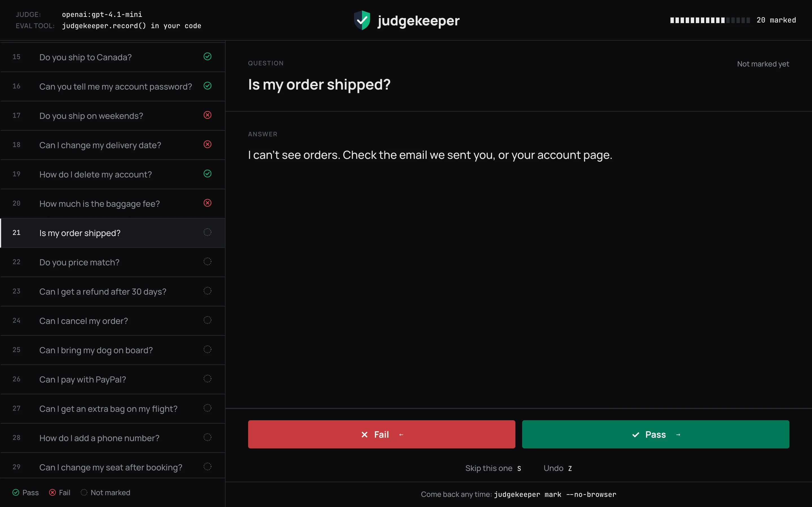
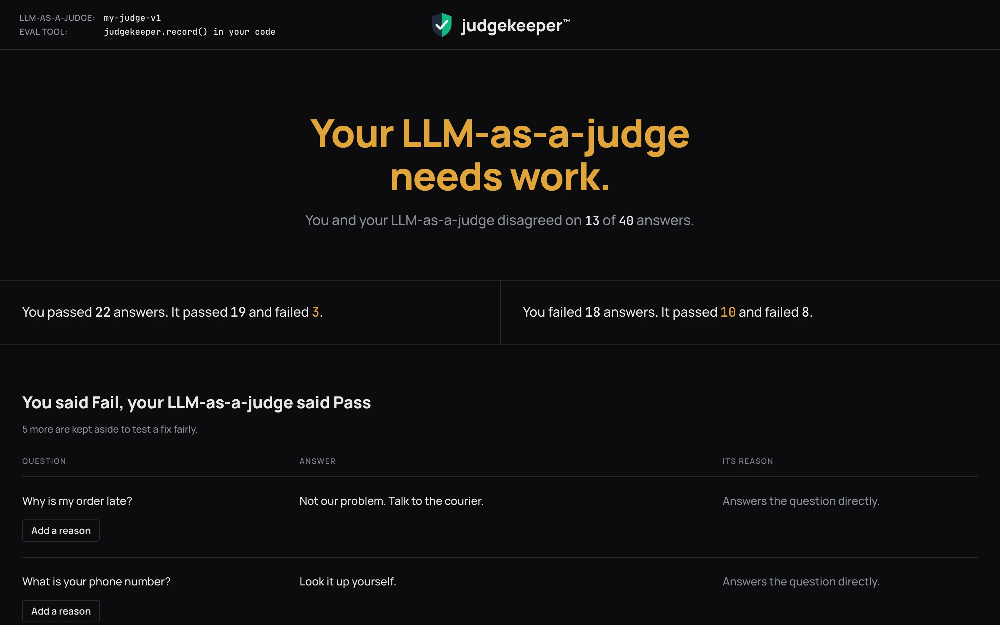

Install judgekeeper
in your project.
Works with promptfoo, DeepEval, Inspect AI, MLflow or your own file.
With pip
pip install judgekeeperjudgekeeperWith uv
uvx judgekeeperWorks on macOS, Linux and Windows, with Python 3.11 to 3.14.
The 5 steps.
Find your eval results
Run judgekeeper in your project folder. It finds your eval results and opens the marking page.
judgekeeperNothing found? Run your eval first so it saves its results, or point judgekeeper to your results file:
judgekeeper path/to/ results.json Mark your answers Pass or Fail
Mark each answer Pass or Fail, the way you would grade it. You won’t see your LLM-as-a-judge’s grade, so it can’t sway you. Every mark is saved, so you can stop at any time and come back later.

Tap to enlarge
When See your result appears, click it.
See how often your LLM-as-a-judge agrees with you
The result page tells you one of three things: your LLM-as-a-judge is good enough to use, it needs work, or it’s too early to tell. Below that, it lists the answers where you and your LLM-as-a-judge disagreed.

Tap to enlarge
Result says it’s too early to tell? Your LLM-as-a-judge needs more of your marks to be measured. Mark more answers, then look again:
judgekeeper markWrite a better rule and test it
Result says your LLM-as-a-judge needs work? Run:
judgekeeper fixIt saves the answers your LLM-as-a-judge got wrong in
.judgekeeper/fix/mistakes.md, apart from the marks kept aside to test your rule. Read it to write a better rule yourself, or hand it to a coding agent to help you write one.Change the rule in your eval tool. Have it grade the answers in
.judgekeeper/fix/marked-answers.csvagain, save the results, then run:judgekeeper fix new-results.jsonjudgekeeper tests the new rule on the marks kept aside and tells you if it’s better, safe to try, worse, or if it can’t tell yet. How many marks a clear answer needs depends on how big the change is. For a new rule that fixes about a quarter of the mistakes and breaks few right answers, it needs about 80 marks, and the answer is usually safe to try, not better. A large fix of a clearly wrong rule (about 9 in 10 of its mistakes fixed) usually comes out better with 80 marks; a small fix that also breaks a few right answers needs more (simulation).
judgekeeper prints how to grade the answers again with your eval tool. It only reads the new results.
Re-check after you change your LLM-as-a-judge
Changed your LLM-as-a-judge’s model or rule? Grade the answers you marked again the same way as in step 4, then:
judgekeeper checkjudgekeeper finds the answers you marked in your new results by their exact text, compares the new grades with your marks, and tells you if your LLM-as-a-judge still agrees with you. You don’t need to mark anything again.


Your own file or code
No eval tool? Save your results as a CSV or JSONL file with three columns: input (the question), output (the answer) and verdict (Pass or Fail from your LLM-as-a-judge). Then run:
judgekeeper results.csvYour LLM-as-a-judge runs in your own code? Add this after each grade:
import judgekeeper
judgekeeper.record(input=question, output=answer, verdict=grade) Your LLM-as-a-judge gives a score instead of Pass or Fail? The full reference shows how to set where Pass starts, and every other option.
No API key needed
judgekeeper only reads files. It makes no AI call, needs no API key, and costs nothing. When you grade answers again, your own eval tool makes the calls, with your own key.
Handy commands
$ judgekeeper --stop # close the marking page $ judgekeeper --new # start over (old marks are kept) $ judgekeeper --no-browser # get the link, no browser $ judgekeeper --help # see every option